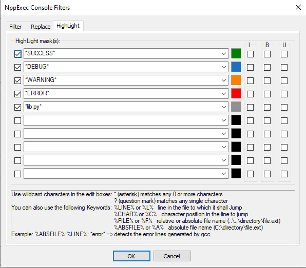
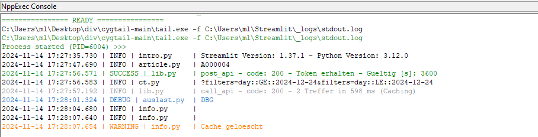

[the idea was originally proposed by mischlrebl as "show and reload file content periodically" here: https://github.com/d0vgan/nppexec/issues/101]
[ mischlrebl: ]
I am wondering if it is possible to watch and track a log file in the Console - like the "Monitoring (tail -f)" function in Notepad++?
It would be very handy to work with split screen on the files and to see the messages below.
[ DV: ]
The closest built-in command in NppExec is con_load, though it loads an entire file into the Console window.
To achieve your goal, you may probably run some external log viewer/watcher implemented as a console application in NppExec's Console.
This version of
tailworks good in NppExec's Console:https://github.com/JavaScriptDude/cygtail
On the cygtail's project page, click the<>Codebutton and then clickDownload ZIPthere.
After downloading and extracting the binaries, this command will do the job:tail -f log.txtBusyBox for Windows also works good in NppExec's Console:
https://frippery.org/busybox/
Once downloaded, this command will do the job:busybox tail -f log.txt
As I had never thought about NppExec in terms of log viewing, I asked mischlrebl for more details of this use-case.
And here are the resulting images that speak for themselves:


It may also be useful to have one instance of NppExec working as a Log Viewer and another instance of NppExec handling commands and scripts.
Refer to "Using several copies of NppExec" [2.4] for details.
See also: Clipboard, keystrokes and much more [4.6.8]; Notepad++ as a Clipboard Monitor [4.6.14].